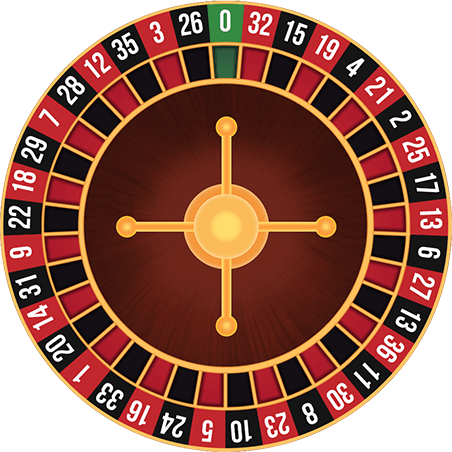

Información de ruleta y sus reglas
Índice
Reglas del juego
La Ruleta es un juego popular de casino jugado con fichas, mesa, ruleta y una bola pequeña. El objetivo de los jugadores es adivinar dónde caerá la bola. Los jugadores hacen apuestas en la mesa utilizando sus fichas. Después del giro de la ruleta, es posible determinar el número ganador.
Tipos de apuesta
Se pueden hacer apuestas solo a un número o elegir números diferentes. También se puede apostar en sectores o columnas (existen diferentes combinaciones). Los jugadores pueden elegir su apuesta sin limitación de cuántos números o combinaciones diferentes pueden hacer. Las apuestas más populares y las posibilidades de ganar en la ruleta europea se describen a continuación.
Apuestas externas
- Color: negro o rojo. Elegir el color negro o rojo es la apuesta más popular en el juego de la ruleta. Las posibilidades de ganar son del 48,6% (18/37).
- Número pequeño o grande. Apostar a números pequeños o grandes es la segunda apuesta más popular, que ofrece la misma posibilidad de ganar que una apuesta en negro o rojo: 48,6%. Los números pequeños son del 1 al 18. Los números grandes del 19 al 36.
- Número par o impar. Igualmente como las dos primeras opciones, la probabilidad de ganar es el 48,6%.
- Apuesta por docenas. Los números en la mesa de la ruleta se dividen en 3 docenas. Cualquiera de esas tres docenas tiene 12 números. La primera docena es de 1 al 12; la segunda de 13 a 24; la tercera contiene los números del 25 al 36. La probabilidad de adivinar es el 32,4% (12/37).
- Apuesta por columnas. Los números que se muestran en la mesa de la ruleta están separados en tres columnas. Cada columna contiene 12 números. La probabilidad de ganar si hace apuesta a una columna es del 32,4%.
Apuestas internas
Las apuestas internas se colocan en la sección interna de la mesa. Estas apuestas permiten apostar fichas directamente a 1 o más números:
- Pleno (Straight Up) es apuesta a un número
- Caballo (Split): las fichas se colocan en la línea entre dos números
- Transversal (Street) es “apuesta a una calle” que contiene 3 números seguidos (ejemplos: 10-11-12 ; 28-29-30).
- Cuadro (Corner): apuesta a 4 números (por ejemplo, 10-11-13-14). La ficha se coloca en la esquina común de los números.
- Seisena (Line): apuesta en dos filas consecutivas de números.

Probabilidades y pagos
| Apuestas | Pago | Probabilidades |
|---|---|---|
| Negro/Rojo | 1:1 | 1,055:1 |
| Grande/Pequeño | 1:1 | 1,055:1 |
| Par/Impar | 1:1 | 1,055:1 |
| Docenas | 2:1 | 2,083:1 |
| Columnas | 2:1 | 2,083:1 |
| Pleno | 35:1 | 36:1 |
| Caballo/Pareja | 17:1 | 17,5:1 |
| Transversal | 11:1 | 11,334:1 |
| Cuadro | 8:1 | 8,25:1 |
| Seisena | 5:1 | 5,167:1 |
Consejos de juego responsable
- Que tu motivación principal al jugar sea divertirte y no el dinero o evadir problemas.
- Ten presente que aunque tu expectativa al jugar sea ganar, lo más frecuente en los juegos de azar es perder.
- Pon atención a tus emociones al jugar. Si lo empiezas a pasar mal, te frustras con más frecuencia, si ya no es tan divertido o te empeñas en recuperar lo perdido y gastas más que tu presupuesto inicial, entonces el juego ha perdido su esencia recreativa.
- Si juegas sin considerar límite de tiempo y presupuesto, eso podría afectar tus relaciones personales y llevarte a desarrollar juego problemático o adicción.
- Cuando juegues evita o disminuye el consumo de alcohol y cigarrillos porque estas drogas aminoran tu capacidad de control y sobreactivan tu sistema de recompensa cerebral poniéndote en riesgo a desarrollar juego problemático o adicción.
- Si estás cansado, has dormido poco o te sientes abrumado por un problema, no es recomendable acudir a los juegos de azar porque podrías tomar malas decisiones y entrar en zona de riesgo.
- Antes de ir a jugar planifica el tiempo y el dinero que vas a invertir. No uses dinero que no tienes y que debas pedir prestado y evita que el juego limite otras actividades o espacios de recreación y vínculo.
- Ten en cuenta que los juegos de azar son para divertirse y no una fuente de ingresos.